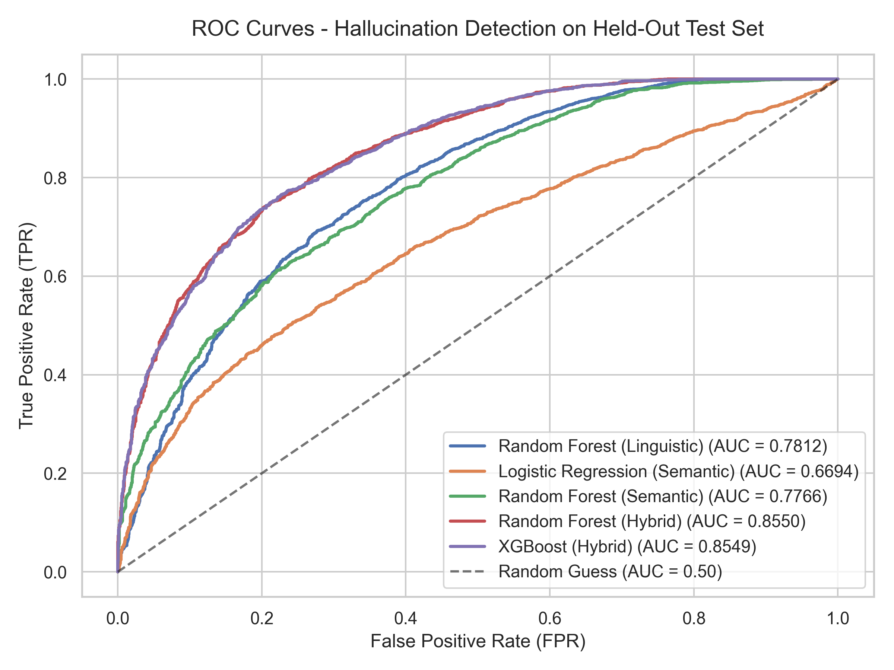
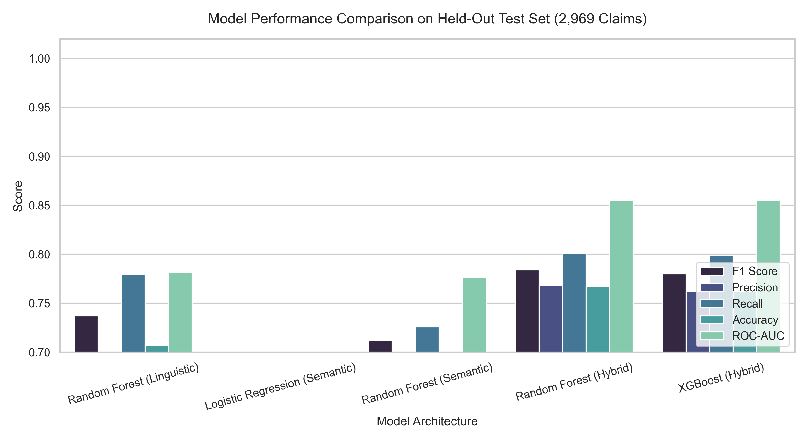
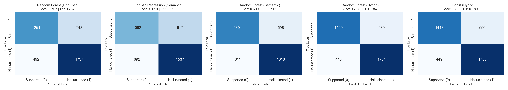
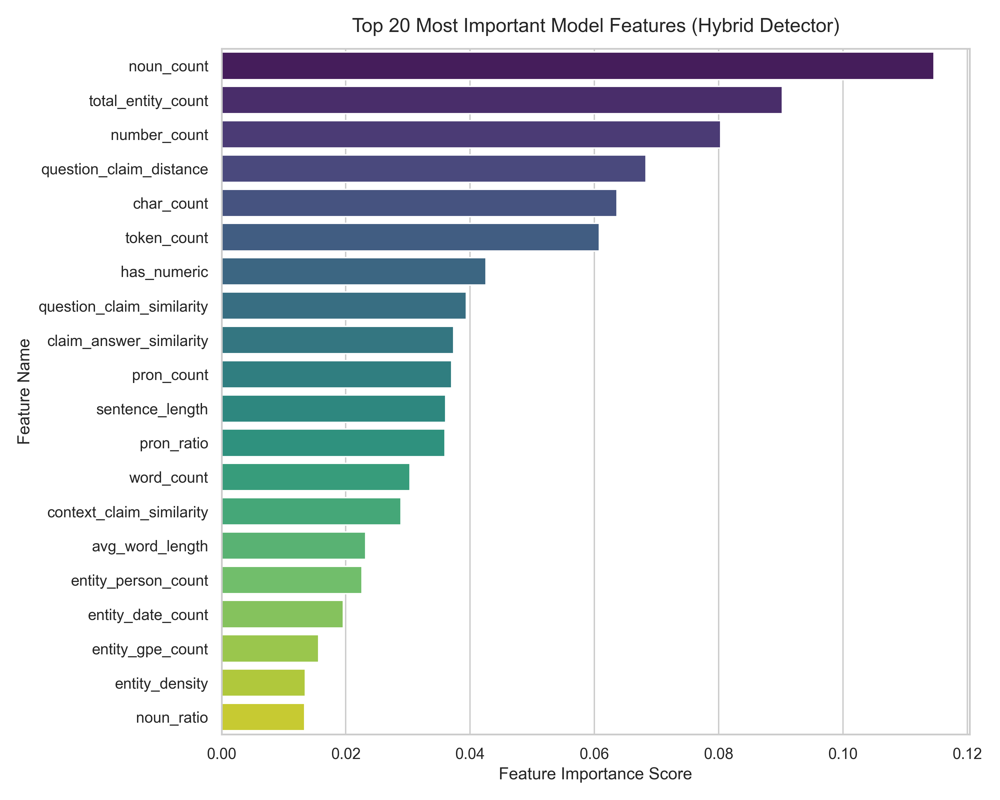
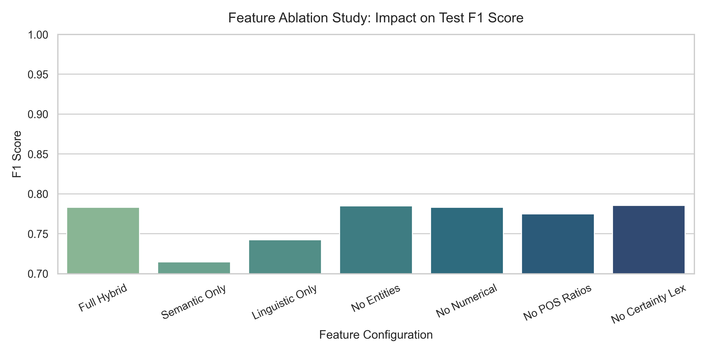

When large language models hallucinate factually fabricated claims, standard 70B evaluator judges choke in multi-second latencies and cost thousands in API fees. NeuralFact introduces a lightweight hybrid architecture: combining sentence transformer geometry (all-MiniLM-L6-v2) with syntactic stance parsing (spaCy) and calibrated tree ensembles running on consumer CPUs.
Relying on commercial LLM APIs (GPT-4 / Claude / Llama-3-70B) to verify every generated sentence introduces catastrophic latency and economic friction:
A mathematical fusion of compact sentence embeddings, syntactic entity density, and calibrated tree ensembles:
Ingests natural language question, generated LLM answer text, and optional RAG context paragraphs.
app/streamlit_app.pyDecomposes narrative answers into atomic claim propositions; strips list headers, bullet points, and fragments.
src/claim_extraction.pyComputes sentence-level max cosine similarity with MiniLM embeddings and in-memory LRU caching.
src/semantic_features.pyExtracts 35 grammatical, numerical regex, named entity, and epistemic certainty features with spaCy.
src/linguistic_features.pyConcatenates semantic geometry with linguistic metrics into an aligned 39-D matrix with closed-book imputation.
src/feature_fusion.pyExecutes sub-millisecond tree inference with Platt scaling calibration and context entity verification.
models/hybrid_xgboost.joblibValidates that question and answer are non-empty strings. Normalizes unicode characters, standardizes quotation marks, and checks for presence of reference context from RAG.
Splits narrative response into atomic claim sentences using spaCy dependency boundaries. Removes numerical list headers ("1. "), bullet points ("• "), and filters trivial fragments shorter than 4 tokens.
Computes L2-normalized 384-dimensional dense vectors with LRU caching. Uses maximum sentence-level cosine similarity to prevent multi-sentence context dilution:
s_max = max_{s in Context} cosine_similarity(e_claim, e_s)
Runs spaCy POS tagger and Named Entity Recognizer. Calculates entity density (PERSON, ORG, GPE, DATE, MONEY), detects 4-digit years with regex, computes grammatical ratios, and matches epistemic stance lexicons (certainty vs uncertainty).
Assembles the unified 39-feature vector. If reference context was omitted by the user, context similarity is imputed using question topical relevance to prevent false-positive penalties from synthetic training artifacts.
Passes the 39-D vector into the calibrated XGBoost ensemble. Maps raw margins into a well-calibrated posterior probability using Sigmoid Platt Scaling fitted on held-out validation data:
P(Hallucination) = 1 / (1 + exp(A * f(x) + B))
Checks if named entities in the claim are present in the reference context. Claims that assert fabricated entities (e.g. asserting Marie Curie when context specifies Alexander Fleming) are flagged with entity mismatch diagnostics and assigned high hallucination risk.
Aggregates claim risk percentages to yield Overall Hallucination Risk (R_mean), Peak Risk (R_max), and High-Risk Claim Count. Generates explainable diagnostic signals for each assertion.
| # | Feature Name | Category | Data Type | Description & Mathematical Role | Importance |
|---|
| Model Architecture | Feature Set | F1-Score | Accuracy | ROC-AUC | Latency / Claim | Throughput | Model Size |
|---|---|---|---|---|---|---|---|
| Random Forest (Linguistic) | Linguistic | 0.7370 | 0.7067 | 0.7812 | 0.007 ms | 135,284 /s | 11.15 MB |
| Logistic Regression (Semantic) | Semantic | 0.6564 | 0.6194 | 0.6694 | < 0.001 ms | 4,305,324 /s | < 0.01 MB |
| Random Forest (Semantic) | Semantic | 0.7120 | 0.6904 | 0.7766 | 0.007 ms | 134,955 /s | 6.33 MB |
| Random Forest (Hybrid) | Hybrid (39-D) | 0.7838 | 0.7673 | 0.8550 | 0.011 ms | 90,752 /s | 21.95 MB |
| XGBoost (Hybrid) [Recommended] | Hybrid (39-D) | 0.7798 | 0.7623 | 0.8549 | 0.001 ms | 980,833 /s | 0.36 MB |





all-MiniLM-L6-v2 (or retrieved from an in-memory LRU cache), feature fusion is an $\mathcal{O}(1)$ array alignment, and XGBoost forward inference on a 39-D vector executes in 0.001 ms per claim using CPU AVX2 SIMD instructions.
0.0 falsely triggers hallucination alarms. NeuralFact imputes context similarity using question-answer topical relevance ($s_{\text{imputed}} = 0.85 \cdot s(q, c) + 0.15$), restoring balanced calibration for context-free prompts.
predict_hallucinations(question, answer, context) from src.predict. It returns a dictionary with overall risk percentage, claim-by-claim breakdown, and natural-language diagnostic signals. You can insert it as a post-generation verification step or guardrail filter with zero external API calls.
Double-click the newly created batch scripts in the project root:
# Run the interactive Streamlit project:
run_project.bat
# Run this Netflix showcase web app:
run_webapp.batVerify LLM generations directly inside your code:
from src.predict import predict_hallucinations
result = predict_hallucinations(
question="Who discovered penicillin?",
answer="Alexander Fleming discovered penicillin in 1928.",
context="Sir Alexander Fleming discovered penicillin in 1928."
)
print(f"Verdict: {result['overall_prediction']}")
print(f"Risk: {result['overall_risk_percent']}%")